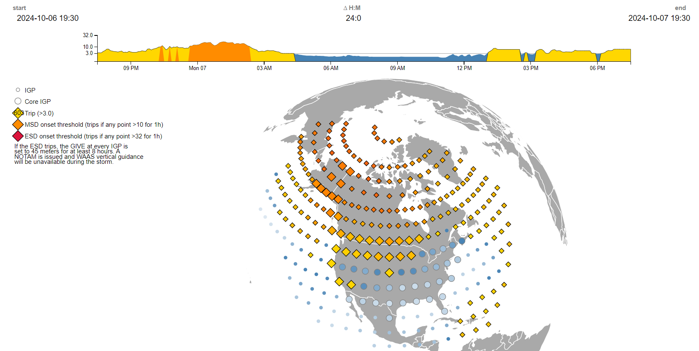
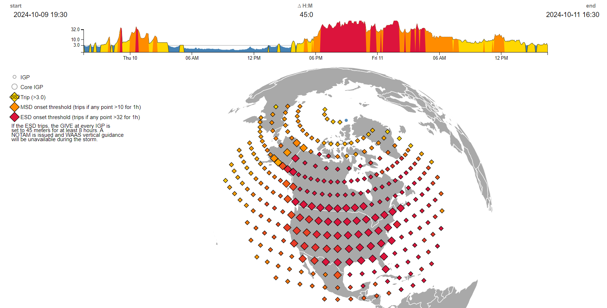
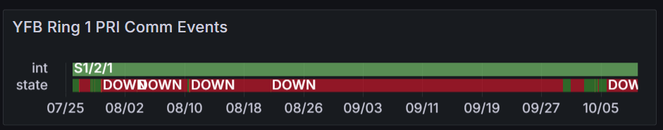
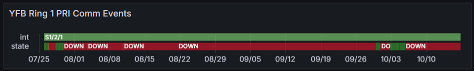

Weekly Highlights 20241002-20241009
10/4 - MTP Rcvr Reception Faults
- 10/4 00:22 - All MTP WREs alarmed with SE 59 Rcvr Reception Fault
- 10/9 23:54 - All MTP WREs alarmed with SE 59 Rcvr Reception Fault
10/6 - ZTL PCU-D Alarm Condition 0
- 10/6 18:28 - ZTL PCU-D alarmed with SE 3 Alarm Condition 0 detected; no other SEs -- ref LCM 875990524
10/6 - All C&Vs IGP Alerts
- 10/6 23:45 - SE 757 IGPs with High GIVEI received for all C&Vs; SE rescinded at 10/7 03:07
- 10/7 00:45 - SE 728 Subframe Reasonability for all ZSU WREs; ZSU PID WRS Down

10/8 - BR2 GUS Fault from Primary
- 10/8 08:39 - GUS Switchover - G30 - BR2 GUS Faulted from Primary with SE 108 Rcvr OMNI Ext Ref CBit Fail; Control Powered but could not restore; Leidos recommended Receiver replace -- ref LAD 877208324; Control Powered, TLT Verification performed, and restored to Backup at 10/8 14:14
10/9-10/10 - Extreme Storm
- 10/9 00:08 - SE 831 Extreme Storm predicted 01:08; SE 832 cancelled at 10/9 00:45
- 10/9 23:01 - SE 831 Extreme Storm predicted 00:01; SE 832 cancelled at 10/9 23:08
- 10/10 00:30 - SE 831 Extreme Storm predicted 01:30; SE 832 cancelled at 10/10 00:39
- 10/10 17:52 - SE 757 IGPs with High GIVEI received for all C&Vs -- ref LAD 878583524; SE rescinded at 10/11 12:36
- 10/10 18:28 - SE 831 Extreme Storm predicted 19:28; SE 832 cancelled at 10/10 18:56
- 10/10 18:57 - SE 831 Extreme Storm predicted 19:57; SE 832 cancelled at 10/10 19:02
- 10/10 19:06 - SE 831 Extreme Storm predicted 20:06; SE 832 cancelled at 10/10 19:07
- 10/10 19:09 - SE 831 Extreme Storm predicted
20:09; SE 833 Extreme Storm In Progress
at 10/10 20:10; SE 834 Extreme Storm
Clearing 12:35 at 10/11 11:36; SE 835
Extreme Storm Cleared at 10/11
12:35 and other Extreme Storm SEs
rescinded at same time
- Ref LIR
878567924 -
WAAS Signal-in Space DEGRADED due to K-index 8(G4) Severve Geomagnetic storms. NOTAMs FDC 4/8056; FDC 4/8091 issued - G4 Geomagnetic Storm
- Ref LIR
878567924 -

Various Comm Impacts
* Only captures major / long-term comm outages
Mexico Comms
- 10/3 09:26 - MSD Ring 1 comms down hard; line cleared at 10/3 11:14 (~1h 47m)
- 10/3 11:36 - MTP Ring 1 comms down hard; line cleared at 10/3 17:45 (~6h 8m)
- 10/9 09:24 - MSD Ring 1 comms down hard; line cleared at 10/9 12:04 (~2h 39m)
- 10/5 20:24 - MTP Ring 1 comms down hard; line cleared at 10/6 03:34 (~7h 9m)
- 10/7 13:24 - MTP Ring 1 comms down hard; line cleared at 10/7 15:16 (~1h 52m)
CDB Comms
- 10/3 09:35 - CDB Ring 1 comms flapping; last event cleared at 10/3 12:34 (>1h)
- 10/9 02:21 - CDB Ring 1 comms down hard; line cleared at 10/9 06:11 (~3h 44m)
- 10/9 17:29 - CDB Ring 1 comms down hard; line cleared at 10/10 00:29 (~7h)
Other Sites
- 10/3 07:18 - CM1 Ring 1 ALT / Ring 2 PRI + YFB Ring 2 comms down hard; all lines cleared at 10/3 07:29 (~11m)
- 10/4 04:51 - OTZ Ring 1 ALT / Ring 2 ALT comms flapping; last events cleared at 10/4 12:23
- 10/4 15:37 - YYR Ring 1 + YFB Ring 1 comms down hard; line cleared at 10/4 18:47 (~3h 9m)
OTZ Ring 2 PRI / ALT
- 9/18 23:57 - OTZ Ring 1 ALT comms
connected after circuit validation
- Currently the wrong circuit (*508) is being used for OTZ Ring 2 ALT and *509 is connected on OTZ Ring 2 PRI
- FTI is troubleshooting the *509 circuit -- ref LIR 69611621
- Intial alarm light on DNX1U has cleared as of 10/1; further troubleshooting required from NASE onsite at ZLA
YFB Ring 1 PRI
- 7/29 17:01 - YFB Ring 1 comms flapping then down hard at 7/29 19:10; loopback testing at 7/30 04:06...
- 7/31 05:08 - YYR Ring 1 down hard + loopback testing impacting YYR Ring 1 and YFB Ring 1 to troubleshoot YFB Ring 1 comms down since 7/29; last event for YYR Ring 1 cleared at 7/31 09:41 (~16389 seconds) -- YFB Ring 1 still down hard...
- 8/10 04:09 - YFB Ring 1 comms UP temporarily; started flapping again at 8/10 08:27 then down hard at 8/10 11:29...
- 9/29 22:29 - YFB Ring 1 comms cleared; down since 7/28 (~2 months)
- 9/30 21:41 - YFB Ring 1 comms down hard again...
- 10/2 17:56 - YFB Ring 1 comms cleared (~1d 20h)
- 10/4 15:37 - YYR Ring 1 + YFB Ring 1 comms down hard; line cleared at 10/4 18:47 (~3h 9m)
- 10/5 18:31 - YFB Ring 1 comms down hard...

List of current offline WREs
List of current offline WREs -- ref WAAS Status Monitor
All Depot shipments to Mexico are halted until the customs process can be finalized
- MMX WRE-C - 5/15-... - Processor failed and could not be restored
- MPR WRE-B - 5/3-... - Inits failing -- looks like a bad freq std; due to shipping issues, there is no spare Freq Std and no ETA to recover WRE-B...
5/11/23-... - MX Ring 2 Satcom Upgrade
- 5/11/23 17:01 - MX Ring 2 SatCom upgrade begins; MX Ring 2 OFFLINE until upgrade troubleshooting is complete
MX WAAS Sites comm upgrades in progress:
- 10/27/23 - Frequentis has delivered to Tijuana, needs to be connected to FTI delivery
- 11/2/23 - FTI has initiated coordination with Tijuana to install and test direct connection to Frequentis -- MMD Test on 12/6/23
- 2/15/24 - MMX Ring 2 successfully connected through Tijuana to ZLA COR-B!
- 6/5/24 - Telco issue localized to Tijuana for 4 out of 5 circuits; MSD appears to have issue at ZLA
- 8/6/24 - MMD Ring 2 successfully connected!
- 9/19/24 - Telco issues at TJX and MSD issue at ZLA resolved; MTP Ring 2 successfully connected!
3 of 5 sites are currently connected through (only enough V.35 adapters for 3x connections), but zero UDP data on Ring 2
FTI-Harris working with Tijuana to deliver new SDP termination to remove V.35 connection and connect directly to satcom

Major Events


Core I/F Dashboard (1/2)

Comm Events - ZLA / ZTL

Core I/F Dashboard (2/2)

Comm Events - ZDC / ZAU

Mexico Comm Status


Weekly Highlights 20241009-20241016
10/9-10/10 - Extreme Storm
- 10/9 00:08 - SE 831 Extreme Storm predicted 01:08; SE 832 cancelled at 10/9 00:45
- 10/9 23:01 - SE 831 Extreme Storm predicted 00:01; SE 832 cancelled at 10/9 23:08
- 10/10 00:30 - SE 831 Extreme Storm predicted 01:30; SE 832 cancelled at 10/10 00:39
- 10/10 17:52 - SE 757 IGPs with High GIVEI received for all C&Vs -- ref LAD 878583524; SE rescinded at 10/11 12:36
- 10/10 18:28 - SE 831 Extreme Storm predicted 19:28; SE 832 cancelled at 10/10 18:56
- 10/10 18:57 - SE 831 Extreme Storm predicted 19:57; SE 832 cancelled at 10/10 19:02
- 10/10 19:06 - SE 831 Extreme Storm predicted 20:06; SE 832 cancelled at 10/10 19:07
- 10/10 19:09 - SE 831 Extreme Storm predicted
20:09; SE 833 Extreme Storm In Progress
at 10/10 20:10; SE 834 Extreme Storm
Clearing 12:35 at 10/11 11:36; SE 835
Extreme Storm Cleared at 10/11
12:35 and other Extreme Storm SEs
rescinded at same time
- Ref LIR
878567924 -
WAAS Signal-in Space DEGRADED due to K-index 8(G4) Severve Geomagnetic storms. NOTAMs FDC 4/8056; FDC 4/8091 issued - G4 Geomagnetic Storm
- Ref LIR
878567924 -
- 10/13 00:09 - SE 831 Extreme Storm predicted 01:09; SE 832 cancelled at 10/13 00:25
10/11 - MTP Issues
- 10/11 11:59 - MTP WRE-C received SE 728 Subframe Reasonability
- 10/11 12:47 - MTP PCU-B spontaneously cycled followed by SEs 1 and 2 Main CB trip/reset, SEs 3 and 4 Alarm Condition 0 trip/reset, and SE 209s Power Conditioner has failed; Operators requested that site technician power off the PCU until further discussion with Engineers -- ref LAD 879309324
- 10/15 17:34 - MTP WRE-B returned to Maintenance after checking power; restored to Normal at 10/15 18:27
10/12 - NOCC RMD Full
- 10/12 01:00 - NOCC O&M RMD Capacity reached / Archive Full sig events
- 10/16 10:02 - NOCC O&M RMD replaced / Archive Full sig events cleared
10/13 - MMX WRE-A Freq Std Fail
- 10/13 16:46 - MMX WRE-A Faulted with SEs 28, 29, 53; Freq Std never restored and the WRE was Control Powered OFF at 10/13 19:56 -- ref LAD 879853824...
10/15 - BR2 GUS Fault from Backup
- 10/15 03:41 - BR2 GUS Faulted from Backup with SE
142 RFU Equipment Downlink Fault and SE 203 L5
LNA Switch Failure --
Problem appears to have been a momentary glitch in the LNA status reporting. Leidos will monitor the GUS and will continue the investigation to further look into this anomaly.ref LIR 880306924
10/15-10/16 - ZBW Comm Updates
- 10/15 04:34 - ZBW Ring 1 ALT / Ring 2 PRI comms
down hard; both lines cleared at 10/15
05:44 (~1h 10m) --
MR-193518A - 10/16 04:06 - ZBW Ring 1 PRI / Ring 2 ALT comms
down hard; both lines cleared at 10/16
04:48 (~40m) --
MR-193520 || L3Harris will be onsite to transition PRIMARY circuits from the ONS C15310 to the Fujitsu FW4100
Various Comm Impacts
* Only captures major / long-term comm outages
Mexico Comms
- 10/12 15:04 - MMX / MTP / MPR / MSD Ring 1 comms down hard; all lines cleared at 10/12 23:34 (~8h 29m)
- 10/15 20:55 - MTP Ring 2 comms started flapping; loop inserted at 10/15 21:07; hard loop not clearing at 10/16 03:27...
CDB Comms
- 10/9 02:21 - CDB Ring 1 comms down hard; line cleared at 10/9 06:11 (~3h 44m)
- 10/9 17:29 - CDB Ring 1 comms down hard; line cleared at 10/10 00:29 (~7h)
Other Sites
- 10/16 05:05 - YYR Ring 2 comms down hard; line cleared at 10/16 06:44 (~1h 38m)
OTZ Ring 2 PRI / ALT
- 9/18 23:57 - OTZ Ring 1 ALT comms
connected after circuit validation
- Currently the wrong circuit (*508) is being used for OTZ Ring 2 ALT and *509 is connected on OTZ Ring 2 PRI
- FTI is troubleshooting the *509 circuit -- ref LIR 69611621
- Intial alarm light on DNX1U has cleared as of 10/1; further troubleshooting from FTI occuring 10/21
YFB Ring 1 PRI
- 7/29 17:01 - YFB Ring 1 comms flapping then down hard at 7/29 19:10; loopback testing at 7/30 04:06...
- 7/31 05:08 - YYR Ring 1 down hard + loopback testing impacting YYR Ring 1 and YFB Ring 1 to troubleshoot YFB Ring 1 comms down since 7/29; last event for YYR Ring 1 cleared at 7/31 09:41 (~16389 seconds) -- YFB Ring 1 still down hard...
- 8/10 04:09 - YFB Ring 1 comms UP temporarily; started flapping again at 8/10 08:27 then down hard at 8/10 11:29...
- 9/29 22:29 - YFB Ring 1 comms cleared; down since 7/28 (~2 months)
- 9/30 21:41 - YFB Ring 1 comms down hard again...
- 10/2 17:56 - YFB Ring 1 comms cleared (~1d 20h)
- 10/4 15:37 - YYR Ring 1 + YFB Ring 1 comms down hard; line cleared at 10/4 18:47 (~3h 9m)
- 10/5 18:31 - YFB Ring 1 comms down hard...

List of current offline WREs
List of current offline WREs -- ref WAAS Status Monitor
All Depot shipments to Mexico are halted until the customs process can be finalized
- MMX WRE-A - 10/13/24-... - Freq Std failed -- ref LAD 879853824
- MMX WRE-C - 5/15-... - Processor failed and could not be restored
- MPR WRE-B - 5/3-... - Inits failing -- looks like a bad freq std; due to shipping issues, there is no spare Freq Std and no ETA to recover WRE-B...
5/11/23-... - MX Ring 2 Satcom Upgrade
- 5/11/23 17:01 - MX Ring 2 SatCom upgrade begins; MX Ring 2 OFFLINE until upgrade troubleshooting is complete
MX WAAS Sites comm upgrades in progress:
- 10/27/23 - Frequentis has delivered to Tijuana, needs to be connected to FTI delivery
- 11/2/23 - FTI has initiated coordination with Tijuana to install and test direct connection to Frequentis -- MMD Test on 12/6/23
- 2/15/24 - MMX Ring 2 successfully connected through Tijuana to ZLA COR-B!
- 6/5/24 - Telco issue localized to Tijuana for 4 out of 5 circuits; MSD appears to have issue at ZLA
- 8/6/24 - MMD Ring 2 successfully connected!
- 9/19/24 - Telco issues at TJX and MSD issue at ZLA resolved; MTP Ring 2 successfully connected!
3 of 5 sites are currently connected through (only enough V.35 adapters for 3x connections), but zero UDP data on Ring 2
FTI-Harris working with Tijuana to deliver new SDP termination to remove V.35 connection and connect directly to satcom

Major Events


Core I/F Dashboard (1/2)

Comm Events - ZLA / ZTL

Core I/F Dashboard (2/2)

Comm Events - ZDC / ZAU

Mexico Comm Status